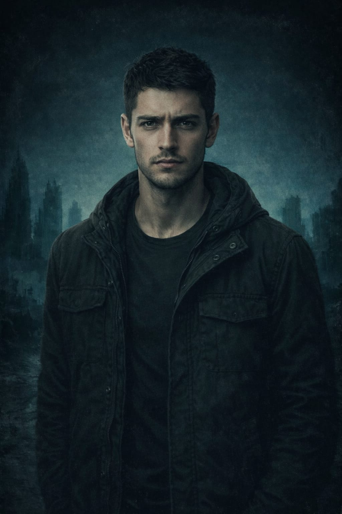

📖 Özet
Rutin dediğimiz şeylerin unutulması için ne kadar zaman gereklidir? 1 hafta, 2 ay? Sadece dakikalar içinde doğru bildiğiniz her şeyi unutabilirsiniz. BU da yetmezmiş gibi vücudunuz 'haayatta kal' mooduna girdiği an tek düşündüğünüz kendiniz olursunuz. Kendinize geldiğinizde ve geriye dönüp baktığınızda elinizde pişamnlıktan başka hiçbir şey kalmaz. Cezalar ortadan kalkarsa, kaç kişi yanlış ve doğruyu ayırt edebilir. Peki yetişkinler bir gecede yok olsaydı, geriye kalanlar nasıl hayatta kalırdı? Herkes yetişkinleri arar mıydı? Ya da tüm şehre sahip olmak ve güçlünün zayıfı ezdiği bir düzen uğruna yetişkinlerin bulunmasına engel mi olurdu? Çözülen her bir şifre, tanışılan her bir insan günleri daha da karartacak, karakterlerimize güven duygusunu unutturacaktır. Sıfır Noktası sadece aşk ve arkadaşlık romanı olmayıp aynı zamanda psikolojiden ve iç içe geçmiş ahlak algısını eleştiren bir rommandır.
Sıfır Noktasında Ne Bulacaksınız?
-
Gerilim
Kimin ne için karşınıza çıkacağını bilemezsiniz, kimse güvenilir değildir.
Ama o benim arkadaşım?
Dün öyleydi, ama bugün çok şey değişti. -
Aşk
Her yanlış kararınızda yanınızda olacak biri var mı?
Yanlışı ona yapsanız bile mi? -
Çözülmesi gereken şifreler
Zaman dışından bir ses seni çağırdı.
Sayılar, eski dilin kilididir.
Sesin kaynağı seni bekliyor.
Doğru yerdeysen, doğru sesleri duyacaksın.
Ama dikkat et; ilk gelen ses, her zaman en doğru olan değildir.
📚 Tür
Bilimkurgu / Distopya
🙋🏻♀️Karakterlerimiz
Anka
Zor kararlar onları taşıyacak iradelibir zihne mahkumdur.
Anka,hem kendi hem de sevdikleri için her şeyi göze alırken en çok sevdiklerinden tepki görür.
Sadece kuruculara karşı değil birlikte bulunduğu sistemde çıkışı istemeyenlere hem de Anka'nın kararlarını eleştiren
arkadaşlarına karşı mücadele verecek ve bu mücadelede okuyucuların bile güvendiği karakterlere güvenerek hata yapacaktır.
Cem
Bir tıp öğrencisi, içine düştüğü durumda diğerlerine kıyasla doğru yol konusunda inatçı bir rol oynar.
Anka'nın verdiği çoğu kararı eleştirirken aralarındaki ilişki hiç de tahmin ettiği gibi ilerlemez.
Yaşadıkları zorluklar bittiğinde her şeyin eskisi gibi olacağına, eskisi gibi kalacağına gönülden inanıyor her hareketini tartıyordur.
Ama hiçbir şey hiçbir zaman eskisi gibi olmaz.
Öğreneceği bu ders onu dönüştürülemez bir biçimde çıkmaza sürükleyecektir.

Kaan
Tehlikenin ortasında ensesini sıyıran kurşunlara rağmensilah kullanmayı reddediyor,yine de içinde bulunduğu karanlıktan korkmuyor.
Ekibe sonradan katılan ve şüpheleri üzerinde toplayan Kaan, hikayenin ilerleyişine yön verecektir.
✨ Yazar Notu
Bu kitap, insanlığın kuralsız bir dünyada yaşadığı ahlaki çöküşü genç-kurgu yönüyle ve psikolojik bir bakışla ele alır.